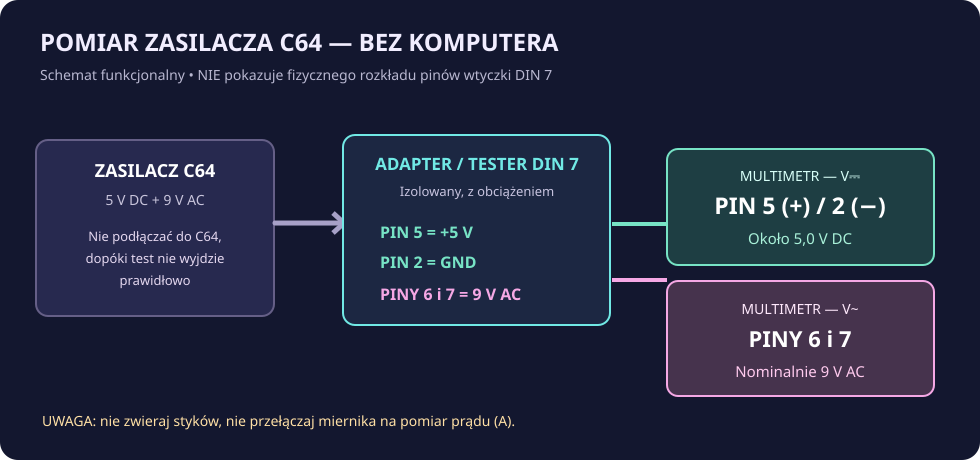
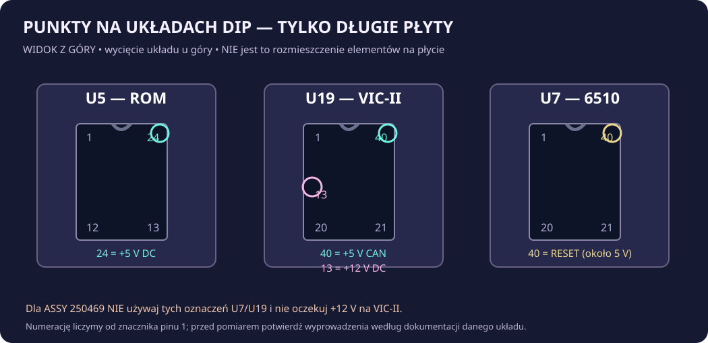

C64: CZARNY EKRAN
Jak znaleźć przyczynę, nie wymieniając układów w ciemno? Zaczynamy od sygnału wideo i starego zasilacza, następnie sprawdzamy właściwe napięcia na płycie, a dopiero później reset i układy logiczne.
! ZANIM DOTKNIESZ MIERNIKA
Nigdy nie używaj podejrzanego oryginalnego „czarnego klocka” bez testu pod obciążeniem. Awaria jego stabilizatora może podać zbyt wysokie napięcie na układy komputera. Nie otwieraj obudowy zasilacza sieciowego — po odłączeniu wtyczki mogą w nim pozostawać niebezpieczne napięcia.
Przed przekładaniem przewodów, wpinaniem chwytaków, pomiarami rezystancji i otwieraniem C64 odłącz zasilanie sieciowe. Nie używaj multimetru w trybie pomiaru prądu (A) do styków napięciowych. Przy pomiarze pod napięciem unikaj dotykania sąsiednich wyprowadzeń. Jeżeli nie masz izolowanego adaptera i pewnego punktu masy, ogranicz się do sprawdzeń bez zasilania i pomocy serwisanta.
WYKLUCZ PROSTE PRZYCZYNY
- Sprawdź, czy monitor lub telewizor ma wybrane właściwe wejście i czy kabel audio/wideo jest sprawny. Jeśli to możliwe, wypróbuj drugi przewód i ekran.
- Odłącz od wyłączonego C64 kartridże, rozszerzenia, stację, magnetofon i dodatkowe kontrolery; pozostaw tylko zasilanie i obraz.
- Zapisz objaw: brak diody POWER, dioda działa bez obrazu, śnieżenie, kolorowe znaki czy zanik obrazu po rozgrzaniu. To nie są te same awarie.
- Sprawdź oznaczenie zasilacza oraz numer ASSY nadrukowany na płycie. Nie opieraj diagnostyki wyłącznie na kształcie obudowy C64.
USTAL REWIZJĘ PŁYTY
Te same oznaczenia U7 lub U19 mogą wskazywać zupełnie inne układy zależnie od płyty. Wartości w części o pomiarach na układach są przeznaczone tylko dla długich płyt.
| ASSY na płycie | Odmiana | CPU / VIC-II | Co mierzyć? |
|---|---|---|---|
| 326298 / 250407 / 250425 | Długie płyty | U7 / U19 | Pomiar 5 V, 5 V CAN i 12 V według tabeli poniżej |
| 250466 | Późna długa płyta | U7 / U19 | Jak wyżej, ale inna organizacja RAM — sprawdź schemat |
| 250469 | Krótka płyta „E” / C64C | U6 / U7 | Nie stosuj tabeli z 12 V dla U19. Inny obwód zasilania VIC-II |
Zwróć uwagę także na szczegółową rewizję oraz oznaczenie układów, zwłaszcza w sprzęcie po wcześniejszych naprawach. Na płycie 250469 VIC-II pracuje z napięciem 5 V w miejscu, gdzie starsze konstrukcje używają 12 V.
SPRAWDŹ ZASILACZ C64
Zasilacz Commodore 64 ma dwa oddzielne wyjścia: +5 V napięcia stałego (DC) i 9 V napięcia przemiennego (AC). Testujemy go odłączonego od komputera, najlepiej na izolowanym adapterze z obciążeniem próbnym.

Około 5,0 V DC. Czerwona sonda do +5 V, czarna do masy, przez izolowany adapter.
Nominalnie 9 V AC. Obie sondy między dwoma stykami AC; nie mierz AC względem masy.
- Przy odłączonej sieci podłącz wtyk zasilacza do gotowego, właściwie izolowanego testera DIN 7. Nie opieraj luźnych sond o sąsiednie styki.
- Podłącz obciążenie próbne odpowiednie do napięć i prądu zasilacza. Ray Carlsen opisuje tester z dwiema odpowiednimi żarówkami 12 V, po jednej dla każdego wyjścia. Elementy obciążenia mogą mocno się nagrzewać.
- Włącz zasilacz i sprawdź +5 V DC oraz obecność 9 V AC. Pozostaw go pod kontrolą na około 30 minut z obciążeniem; obserwuj, czy +5 V nie wzrasta w miarę nagrzewania.
- Jeśli wyjście DC przekracza około 5,2 V, zasilacz jest podejrzany i nie wolno podłączać go do komputera. Podobnie przy niestabilnych lub zbyt niskich odczytach.
| +5 V DC pod obciążeniem | Interpretacja orientacyjna |
|---|---|
| Około 4,95–5,10 V | Zakres typowy dla sprawnego, stabilnego zasilacza. |
| Poniżej 4,9 V | Podejrzanie nisko — nie zasilaj komputera, zbadaj zasilacz. |
| 5,10–5,20 V | Wymaga ostrożnej weryfikacji, nie traktuj pojedynczego odczytu jako pełnego testu. |
| Powyżej około 5,2 V | ZATRZYMAJ TEST. Ryzyko uszkodzenia C64. |
Bez obciążenia zasilacz może pokazać prawidłowe 5 V mimo usterki. Odczyt 9 V AC również zależy od obciążenia i rodzaju transformatora. W razie niepewności wybierz sprawdzony, zgodny zasilacz zastępczy. Źródło: Ray Carlsen — tester zasilacza ↗
POMIARY NA DŁUGIEJ PŁYCIE
Ta tabela dotyczy starszych płyt 326298, 250407, 250425 i 250466, z procesorem oznaczonym U7 i VIC-II jako U19. Używaj jej tylko wtedy, gdy odczytałeś numer ASSY i potwierdziłeś model układu w schemacie.

| Punkt dodatni | Oczekiwane DC | Co mówi pomiar |
|---|---|---|
| U5 (ROM znaków), pin 24 | ≈ +5 V | Główne zasilanie logiki |
| U19 (VIC-II), pin 40 | ≈ +5 V | Osobna linia +5 V CAN |
| U19 (VIC-II), pin 13 | ≈ +12 V | Linia 12 V w starszych układach VIC-II |
| U7 (6510), pin 40 | ≈ +5 V po starcie | Sygnał RESET powinien przestać być w stanie niskim |
Bezpieczna kolejność: przy odłączonym zasilaniu sprawdź ciągłość do prawdziwego punktu GND według schematu, umocuj izolowany chwytak masy i chwytak pomiarowy na jednym wyprowadzeniu. Dopiero wówczas uruchom komputer na sprawdzonym zasilaczu i odczytaj DC. Wyłącz i odłącz zasilanie przed przeniesieniem chwytaka do kolejnego punktu.
Zwykły multimetr nie pokaże wiarygodnie przebiegu impulsu RESET przy samym włączeniu ani sygnałów zegarowych około 1 MHz. Odczyt około 5 V na linii RESET po rozruchu to jedynie kontrola stanu ustalonego; pełna diagnostyka resetu wymaga sondy logicznej lub oscyloskopu.
PROSTA MAPA DECYZJI
Nie podłączaj C64. Najpierw wymień lub profesjonalnie sprawdź zasilacz. Awaria może występować dopiero po nagrzaniu.
Na długiej płycie może zabraknąć zasilania części obwodów zegara i obrazu. Szukaj usterki w zasilaczu i torze 9 V AC zgodnie ze schematem; nie wymieniaj od razu VIC-II.
Sprawdź zasilanie przez złącze, wyłącznik, bezpiecznik oraz odpowiednie ścieżki. Pomiary ciągłości wykonuj przy odłączonym zasilaniu.
Sprawdź sygnał RESET, następnie zegary sondą logiczną/oscyloskopem, obraz i test Dead Test. Dopiero wyniki tych testów zawężą podejrzenia do RAM, PLA, ROM, CPU lub VIC-II.
KARTA POMIARÓW DO WYDRUKOWANIA
Zapisz datę, rewizję płyty i stan po rozgrzaniu. Nie wpisuj „sprawny” na podstawie jednego pomiaru bez obciążenia.
| Punkt | Oczekiwane | Mój wynik |
|---|---|---|
| ASSY / rewizja | Numer z płyty | ________________ |
| Zasilacz 5 V DC pod obciążeniem | Około 5,0 V, stabilne | ________________ |
| Zasilacz 9 V AC | Nominalnie 9 V AC | ________________ |
| U5 pin 24 (tylko długa płyta) | ≈ 5 V DC | ________________ |
| U19 pin 40 (tylko długa płyta) | ≈ 5 V DC | ________________ |
| U19 pin 13 (tylko długa płyta) | ≈ 12 V DC | ________________ |
| U7 pin 40 (tylko długa płyta) | ≈ 5 V po rozruchu | ________________ |
ŹRÓDŁA SERWISOWE
Poniższe opracowania posłużyły do ustalenia napięć, oznaczeń układów i kolejności diagnostyki. Schematy publikujemy jako odsyłacze; rysunki na tej stronie są naszymi poglądowymi diagramami, a nie kopiami płyt Commodore.
- Ray Carlsen — A Tester for the C64 Power Supply ↗Oryginalny opis testera, pinów DIN 7 i testu cieplnego z obciążeniem.
- Commodore — Service Manual, Power Supply ↗Wewnętrzne linie 5 V DC, 9 V AC i zasilanie starszych układów.
- Commodore — Troubleshooting Guide ↗Oryginalna lista objawów, w tym czarny ekran.
- Commodore 64 Troubleshooting Guide ↗Zestawienie pinów U5/U19/U7, resetu i różnic między rewizjami.
- Service Manual C64/C64C (1992) ↗Dokumentacja późnych rewizji, w tym płyty 250469.
Stan dokumentacji sprawdzony: listopad 2026. Niektóre starsze skany mają błędy przepisywania pinów w warstwie tekstowej; w razie sprzeczności sprawdź obraz oryginalnego schematu swojej rewizji.